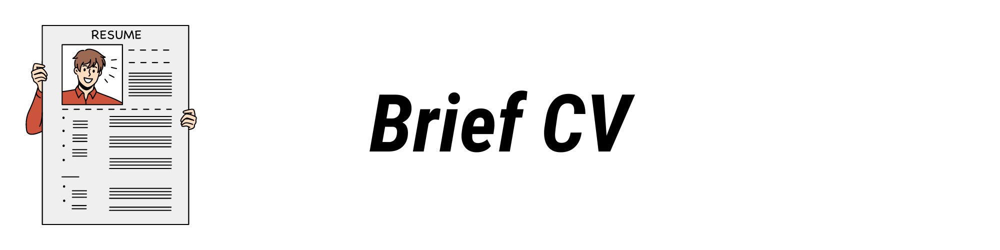
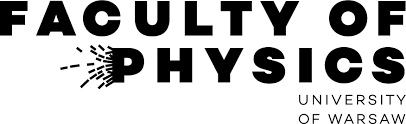
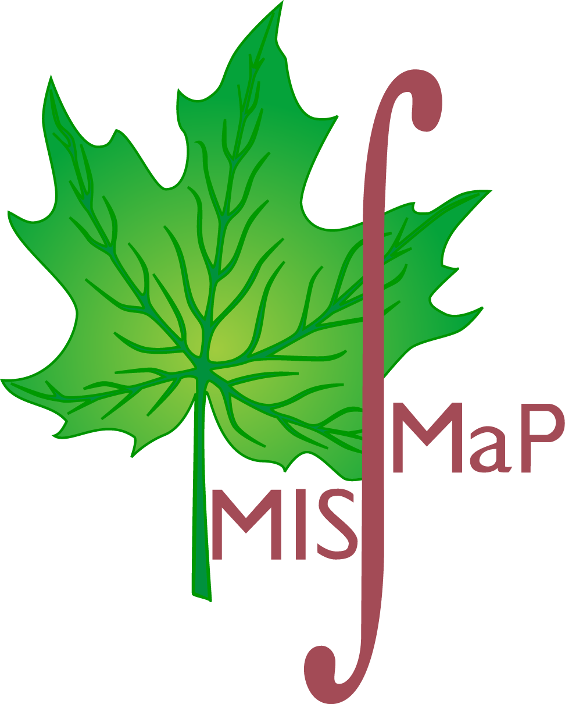

Brief CV

Academic professional activities
Assistant Professor (postdoctoral fellow)
7/2022 - present
Division of Complex Fluids,
Department of Biosystems and Soft Matter,
Institute of Fundamental Technological Research,
Polish Academy of Sciences
7/2022 - present
Division of Complex Fluids,
Department of Biosystems and Soft Matter,
Institute of Fundamental Technological Research,
Polish Academy of Sciences

Researcher & Teaching Assistant (doctoral student)
10/2016 - 9/2021
Chair of Condensed Matter Physics,
Institute of Theoretical Physics,
Faculty of Physics,
University of Warsaw
10/2016 - 9/2021
Chair of Condensed Matter Physics,
Institute of Theoretical Physics,
Faculty of Physics,
University of Warsaw
Participation in research grants
Hydrodynamic interactions under Reynolds numbers much smaller than unity
My role: Investigator
7/2021 - present
Source of financing: National Science Centre (Poland), grant OPUS,
grant number: 2021/41/B/ST8/04474
Research group leader (Principal Investigator): prof. Maria L. Ekiel-Jeżewska, PhD, DSc
My role: Investigator
7/2021 - present
Source of financing: National Science Centre (Poland), grant OPUS,
grant number: 2021/41/B/ST8/04474
Research group leader (Principal Investigator): prof. Maria L. Ekiel-Jeżewska, PhD, DSc
Nonperturbative renormalization theory for interacting many-body systems
My role: Investigator
11/2018-9/2021
Source of financing: National Science Centre (Poland), grant SONATA BIS,
grant number: 2017/26/E/ST3/00211
Research Group Leader (Principal Investigator): Paweł Jakubczyk, PhD, DSc, prof. univ.
My role: Investigator
11/2018-9/2021
Source of financing: National Science Centre (Poland), grant SONATA BIS,
grant number: 2017/26/E/ST3/00211
Research Group Leader (Principal Investigator): Paweł Jakubczyk, PhD, DSc, prof. univ.
Renormalization theory for phase transitions in systems of correlated fermions
My role: Investigator
10/2016 – 7/2018
Source of financing: National Science Centre (Poland), grant OPUS,
grant number: 2014/15/B/ST3/02212
Research group leader (Principal Investigator): Paweł Jakubczyk, PhD, DSc, prof. univ.
My role: Investigator
10/2016 – 7/2018
Source of financing: National Science Centre (Poland), grant OPUS,
grant number: 2014/15/B/ST3/02212
Research group leader (Principal Investigator): Paweł Jakubczyk, PhD, DSc, prof. univ.
Education
University of Warsaw, Faculty of Physics
PhD in Theoretical Condensed Matter Physics
10/2016 – 7/2018
Dissertation title: Quantum phase transitions in polarized mixtures of ultracold fermionic atoms with unequal masses
Date of defence: 12 January 2022
Dissertation supervisor: Paweł Jakubczyk, PhD, DSc, prof. univ
PhD in Theoretical Condensed Matter Physics
10/2016 – 7/2018
Dissertation title: Quantum phase transitions in polarized mixtures of ultracold fermionic atoms with unequal masses
Date of defence: 12 January 2022
Dissertation supervisor: Paweł Jakubczyk, PhD, DSc, prof. univ

University of Warsaw, Inter-Faculty Individual Studies in Mathematics and Natural Sciences
MSc in Statistical Physics
10/2016 – 7/2018
Thesis title: The effective action and phase diagram of a model of superconductivity with population imbalance
Date of defence: 16 September 2016
Thesis supervisor: Paweł Jakubczyk, PhD, DSc, prof. univ.
MSc in Statistical Physics
10/2016 – 7/2018
Thesis title: The effective action and phase diagram of a model of superconductivity with population imbalance
Date of defence: 16 September 2016
Thesis supervisor: Paweł Jakubczyk, PhD, DSc, prof. univ.
University of Warsaw, Inter-Faculty Individual Studies in Mathematics and Natural Sciences
BSc in Molecular Physics
10/2016 – 7/2018
Thesis title: Precise calculations Born-Oppenheimer energy for H2 molecule in excited state EF 1Σ+g
Date of defence: 26 June 2015
Thesis supervisor: prof. Krzysztof Pachucki, PhD, DSc
BSc in Molecular Physics
10/2016 – 7/2018
Thesis title: Precise calculations Born-Oppenheimer energy for H2 molecule in excited state EF 1Σ+g
Date of defence: 26 June 2015
Thesis supervisor: prof. Krzysztof Pachucki, PhD, DSc
Skills
Theoretical framework
Non-Relativistic Quantum Field Theory; Path Integrals; Green’ Function Methods in Condensed Matter Theory; Quantum Mechanics of Many-Body Systems; Scattering Theory; Renormalization Group Methods; Scaling Hypothesis and Critical Phenomena; Quantum Phase Transitions; Landau-Ginzburg Theory; Statistical Mechanics; Stochastic Processes; Mechanics of Continuous Media & Hydrodynamics; Hydrodynamic Interactions & Multipole Method in Stokes Flows; Slender Body Theory of Fibers in Viscous Flows
Programming Languages
Experienced: Python, C++ , Fortran; Familiar: Julia, R
Libraries
matplotlib, SciPy, NumPy, SymPy, pandas, numba, seaborn, Cython, GNU Scientific Library, LAPACK, BLAS
Frameworks & Tools
LaTeX, Shell & Bash Scripting, Git, HTML & CSS, Windows, Linux, macOS, Jupyter, Slurm Workload Manager
Software
Experienced: Wolfram Mathematica, MATLAB; Familiar: Maple, Origin, LABView, Inkscape
Languages
Native: Polish; Full professional proficiency: English; Basic: German